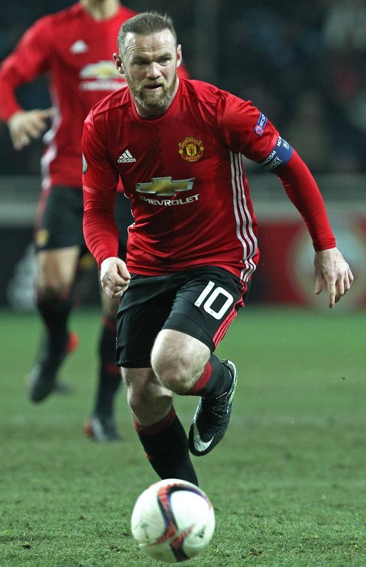

10 năm ở Premier League. Tất cả các bàn thắng và danh hiệu, chấn thương và dự định đều được thúc đẩy bởi cùng một suy nghĩ: Tôi ghét thua cuộc. Tôi ghét cay ghét đắng điều ấy. Đó là cảm giác tồi tệ nhất từ trước đến nay và thậm chí một hoặc ba bàn thắng trong trận đấu cũng không thể khiến thất bại trở nên dễ chịu. Trừ khi tôi bước ra sân rồi trở thành người chiến thắng, nếu không thì các pha lập công đều vô nghĩa. Nếu United thua, tôi không quan tâm đến việc mình đã ghi được mấy bàn.
Khó chịu đến mức tôi thậm chí ghét luôn việc nghĩ về thất bại. Thứ này làm phiền tôi, nó văng vẳng trong đầu, nó không phải là lựa chọn cho tôi, nhưng khi điều đó xảy ra, tôi thua nó. Tôi tức giận, tôi điên tiết, tôi hét vào mặt đồng đội, tôi ném đồ đạc và tôi hờn dỗi. Thực tế là tôi ghét mình hành động theo cách này, nhưng tôi không thể kháng lại. Khi còn là một chàng trai, chơi các trận đấu với anh em bạn bè, tôi từng là một kẻ thua cuộc xấu tính và bây giờ tôi vẫn là một kẻ thua cuộc xấu tính, khi chơi cho United.
Không quan trọng tôi đang chơi ở đâu hay đối đầu với ai, tôi vẫn như vậy mỗi khi xỏ chân vào giày. Trong một buổi đấu tập tại Carrington trước trận hạ màn của mùa giải 2009-10, tôi nhớ mình đã bị đốn ngã hai lần trong vòng cấm. Tôi nhớ điều đó bởi vì nó làm tôi bận lòng rất nhiều.

.Trọng tài là một trong những huấn luyện viên thể hình của chúng tôi, không đưa ra quyết định nào với tôi trong cả trận đấu và đội của tôi thua với một vài bàn. Khi tiếng còi mãn cuộc vang lên và những người còn lại quay về phòng thay đồ để thay quần áo, cười đùa cùng nhau, tôi lại nổi cơn thịnh nộ, đá những chiếc cone nấm tập luyện và đóng sầm những cánh cửa.
Điều này cũng giống như cuộc cạnh tranh của tôi bên ngoài sân cỏ, tôi thường chơi game trên máy tính với các cầu thủ Anh khi đi làm nhiệm vụ quốc tế. Một lần, tôi thua một trận game FIFA và sau đó ném tay cầm điều khiển ngang phòng vì quá bức xúc với bản thân. Một tối khác, tôi chồm về phía trước và tắt máy khi đang chơi game vì biết mình sẽ thua. Mọi người nhìn chằm chằm vào tôi như thể tôi là một người tâm thần.
“Thôi nào, Wazza, đừng như vậy mà.”
Điều đó còn làm tôi khó chịu hơn, cho nên tôi đuổi mọi người ra khỏi phòng và hờn dỗi một mình.
Tôi không chỉ mất bình tĩnh với đồng đội. Tôi cãi cọ với những người ở xa như Thái Lan và Nhật Bản khi chơi với họ trong một game bóng đá trực tuyến. Họ hạ tôi; tôi tranh luận với họ qua tai nghe liên kết người chơi trực tuyến. Tôi là một người đàn ông trưởng thành. Có lẽ tôi nên thả lỏng nhiều hơn một chút, nhưng tôi thấy khó có thể hạ nhiệt khi mọi thứ không như ý và ngoài ra, mọi người đều như thế trong gia đình tôi.
Chúng ta chết vì cạnh tranh. Chơi cờ, đánh quần vợt trên đường phố, bất kể trò nào từng chơi khi tôi còn là một cậu trai, chúng tôi đều cạnh tranh để giành chiến thắng. Và không ai trong chúng tôi thích thua cuộc.
Đôi khi tôi nghĩ đó là một điều tốt - tôi không cho rằng mình giống như một cầu thủ bóng đá, nếu tôi hạnh phúc khi giành được vị trí thứ hai. Tôi cần khát khao này để thúc đẩy khi thi đấu, giống như Eric Cantona và Roy Keane đã từng, khi họ còn ở United.
Họ đã có niềm đam mê trọn vẹn. Tôi cũng vậy, nó mang lại cho tôi một lợi thế, nó thúc đẩy tôi cố gắng nhiều hơn. Hai người đó không chịu chấp nhận thất bại. Chính xác là họ đã không có thêm nhiều bạn trên sân, nhưng họ đã có được rất nhiều danh hiệu. Tôi giống như thế. Tôi e rằng nhiều cầu thủ sẽ nói họ rất thích cạnh tranh với tôi trong quá khứ và tôi muốn nghĩ mình sẽ là một nỗi phiền muộn với những người tôi đối đầu. Tôi có lẽ cũng là một nỗi phiền muộn với những đồng đội, bởi khi United thua hoặc trông giống như sắp thua sau hiệp một, tôi điên lên trong phòng thay đồ.
Tôi hét lên và kêu la.
Tôi sút một quả bóng trong phòng.
Tôi ném đôi giày của mình xuống.
Tôi mất kiểm soát với đồng đội.
Tôi hét vào mặt mọi người và họ cũng hét vào mặt tôi.
Tôi không hét lên, kêu la và sút bóng khắp phòng vì không thích ai đó. Tôi làm điều ấy vì tôi tôn trọng họ và tôi muốn họ chơi tốt hơn.
Tôi không chịu được việc chúng tôi bị đánh bại.
Tôi thét vào mặt các cầu thủ, họ cũng thét vào mặt tôi. Tôi chẳng nghĩ quá nhiều khi làm ầm lên và không mong mọi người sẽ phiền lòng khi tôi phàn nàn họ. Đó là một phần của cuộc chơi. Vâng, đôi khi nó giống như một sự nguyền rủa, tức giận và ủ rũ khi tôi thua cuộc, nhưng đó là một động lực. Thứ khiến tôi trở thành cầu thủ như chính tôi.
Nỗi căm ghét thất bại trong tôi, dù là đứng thứ hai, đã bắt đầu từ Croxteth. Gia đình kiêu hãnh. Crocky là một nơi kiêu hãnh và không ai muốn bản thân hoặc gia đình họ bị xem thường trên đường phố nơi tôi sống. Gia đình tôi không khá giả, nhưng đủ sống qua ngày và các anh em tôi không được phép xem nhẹ bất cứ điều gì khi chúng tôi đang trưởng thành. Chúng tôi biết rằng nếu muốn thứ gì đó là phải cố mà đạt được và như tôi đã nói, những sự tưởng thưởng không đến dễ dàng. Tôi chắt lọc điều đó từ mẹ, bố, bà và ông. Tôi học được rằng nếu làm việc chăm chỉ, tôi sẽ kiếm được những phần thưởng. Nếu tôi cố gắng ở trường, tôi sẽ nhận được chiếc áo mới nhất của Everton - đội bóng mà cả gia đình tôi ủng hộ - hoặc một chiếc áo đấu mới nếu tôi cần. Đó là nơi manh nha ý chí để làm việc.
Thứ kỷ luật này, khao khát chiến thắng này và sự thôi thúc bản thân cũng diễn ra khi tôi rời trường học. Tôi đến Trung tâm Thể thao Crocky với chú Richie, một người to béo với chiếc mũi tẹt của một võ sĩ quyền anh. Cú đấm của chú ấy cực nặng. Tôi không bao giờ đánh nhau đúng nghĩa, nhưng tôi tập đấm bốc ba lần một tuần và việc luyện tập mang lại cho tôi sức mạnh với một khả năng cạnh tranh bền bỉ hơn. Trên tất cả, nó mang lại niềm tin cho tôi.
Tôi nghĩ tất cả chúng tôi đều tin tưởng vào gia đình, nhưng tôi không cho là nó chỉ có ở những người nhà Rooney. Tôi nghĩ đó là chất của Liverpool. Mọi người thực sự hướng ngoại ở Crocky; mọi người nói ra suy nghĩ của họ, đó là điều tôi thích. Khi còn nhỏ, tôi học cách tự tin bên trong phòng tập đấm bốc. Nếu tôi bước vào sàn đấu với một gã trai lớn gấp đôi mình, tôi không bao giờ nghĩ, Hãy nhìn thân hình của hắn! Mình sẽ bị dập tơi tả. Nghĩ như vậy có nghĩa là tôi đã thất bại từ trong tâm. Thay vào đó, tôi nghĩ về mọi cuộc chiến. Mình sẽ giành chiến thắng, ngay cả khi chống lại những gã đô hơn. Một anh bạn ở phòng tập thể hình tên là John Donnelly [1], anh ta lớn tuổi hơn và nặng hơn tôi, nhưng mỗi lần chúng tôi đấu với nhau, chú Richie lại dặn tôi kiềm chế. Chú ấy sợ John không thể xử nổi tôi.
Khát khao chiến thắng và sự tự tin trên sân cỏ chắc chắn có cùng cội nguồn, ngay cả khi tôi chơi cho De La Salle, đội bóng của trường. Nếu có một cầu thủ cướp bóng từ tôi bằng một cú tắc, tôi sẽ luyện sức bền trong phòng tập thể hình vào tuần sau. Tôi tự hứa với bản thân rằng điều đó sẽ không xảy ra nữa. Không ai có thể đánh bại tôi trong một pha tranh bóng.
Nếu tôi trông giống như mất đi khao khát, bố liền thôi thúc tôi. Khi tôi thi đấu vào một buổi chiều Chủ nhật, ông luôn đến xem. Ông khích lệ khi tôi gặp khó khăn. Đôi lúc, ông còn bị thương nhiều hơn tôi. Ông bảo tôi phải làm việc chăm chỉ hơn, cố gắng nhiều hơn nữa. Tôi chơi một trận và trời lạnh cóng, tay đau nhói và chân tôi như một khối băng. Tôi chạy ra khỏi đường biên.
“Đây rồi, bố, con sẽ phải rời sân. Trời quá lạnh. Con không thể cảm nhận được đôi chân của mình.”
Mặt ông biến sắc và trông ông như sắp bùng lên cơn giận dữ.
“Gì cơ? Con lạnh sao?”
Ông không thể tin nổi.
“Hãy ra khỏi đó và chạy nhiều hơn. Tiếp tục chiến đấu!”
Tôi chạy quanh nhiều hơn một chút để làm ấm người. Mới 9 tuổi nhưng tôi biết cần phải làm theo lời khuyên của bố, tôi sẽ phải cứng rắn hơn nữa nếu muốn trở thành một cầu thủ bóng đá đúng nghĩa.
Tất cả những người hùng trong tôi đều là các chiến binh.
Trên ti vi, tôi thích xem các võ sĩ quyền anh, đặc biệt là Mike Tyson, bởi tốc độ và sự hung hãn của bản thân khiến anh ta rất hưng phấn. Anh ta luôn khao khát hạ đo ván đối thủ. Khi tôi theo dõi Everton cùng bố, cầu thủ yêu thích của tôi là Duncan Ferguson, vì ông ấy là một võ sĩ giống như Iron Mike, cứng rắn, và tôi thích cách ông không bao giờ bỏ cuộc, đặc biệt nếu mọi thứ không theo ý muốn. Ông ấy luôn xông xáo. Ông cũng ghi những bàn thắng cừ khôi. Tôi có thể xem ông chơi bóng cả ngày.
Tôi yêu Everton, tôi phát điên vì họ. Tôi viết thư cho câu lạc bộ và đề nghị được trở thành mascot cho một trận đấu khi tôi 10 tuổi.
Vài tuần sau, một lá thư gửi đến thông báo tôi đã được chọn, tôi mừng chết đi được vì chuẩn bị đi cùng đội đến trận derby Merseyside tại Anfield. Tôi bước ra sân với đội trưởng của chúng tôi, Dave Watson, cạnh John Barnes của Liverpool và tôi không thể tin sự ồn ào của đám đông. Sau đó, tôi tiến vào vòng cấm để tung các cú sút hướng đến thủ môn của chúng tôi, Neville Southall. Tôi chỉ định chuyền bóng lại cho ông ấy một cách nhẹ nhàng, nhưng tôi cảm thấy nhàm chán nên bấm một quả bóng qua đầu ông và đi vào lưới. Tôi có thể nhận thấy ông ấy không vui, cho nên khi ông lăn bóng trở lại với tôi, tôi lại bấm bóng với ông ấy.
Tôi chỉ muốn ghi bàn.
Vài năm sau, tôi trở thành một cậu bé nhặt bóng ở Goodison Park. Neville lại đứng trong khung gỗ và khi tôi chạy đến để thực hiện một cú sút bóng ra ngoài sân, ông ấy bắt đầu hét vào mặt tôi. “Nhanh lên, thằng nhóc nhặt bóng!” Ông ấy hét lớn. Điều đó làm tôi sợ hãi. Sau đấy, tôi kể chuyện đó cho đám bạn ở trường.
Chiều hôm đó tại Anfield, Gary Speed ghi bàn cho chúng tôi, bàn thắng khiến tôi sướng chết đi được vì ông ấy là một trong những cầu thủ yêu thích của tôi. Tôi có thể thấy ông làm việc chăm chỉ ra sao và ông là một hình mẫu chuyên nghiệp. Có người kể với tôi rằng ông ấy cũng lớn lên như một người hâm mộ Everton, cho nên sau đó ít lâu, khi mẹ mua cho tôi một chú thỏ cưng, tôi quyết định đặt tên nó là “Speedo”. Hai ngày sau, Speedo thật đã gia nhập Newcastle và tôi ủ rũ trong nhiều hôm.
Việc tập dượt và rèn luyện được đền đáp.
Tôi được các tuyển trạch viên của câu lạc bộ phát hiện khi lên 9 tuổi và gia nhập Everton, điều này giống như một giấc mơ trở thành hiện thực. Sau đó tại câu lạc bộ, tôi thi đấu ở các đội lớn tuổi hơn chứ không phải ở lứa của mình, vì tôi trội hơn về mặt kỹ thuật và thể chất mạnh mẽ hơn so với những cậu bé đồng trang lứa. Thật là điên rồ. Tôi không nói với những đứa trẻ bằng tuổi khi đi tập, vì tôi không bao giờ chơi với chúng, tôi thực sự không biết chúng. Khi 14 tuổi, tôi làm việc với đội U19 Everton. Tôi, một đứa trẻ, thi đấu (gần như) với những gã đã trưởng thành và cạnh tranh, ghi bàn, chiến thắng các cú tắc. Cảm giác thật tuyệt.
Mọi việc còn tiến triển hơn. 15 tuổi, tôi chơi trong đội dự bị của Everton. Ở tuổi 16, tôi góp mặt trong đội Một. Tôi biết mình có thể chơi ở đẳng cấp này vì bản thân đang nỗ lực hết mình và một vị trí ở bên cánh là phần thưởng cho tôi, giống như điều bố mẹ đã dạy. Một số huấn luyện viên hoài nghi liệu tôi có đủ sức để đấu với những cầu thủ chuyên nghiệp hay không, nhưng tôi biết mình có lợi thế vì việc tập quyền anh cùng chú Richie đã mang lại cho tôi cơ bắp.
Khi chúng tôi đấu với đội dự bị của Manchester United trên sân nhà, một trong những huấn luyện viên của đội chỉ cách để chúng tôi trở nên mạnh mẽ trước Gary Neville, một trong những ngôi sao nơi đội Một của họ.
Bên ngoài Old Trafford, mọi người đều ghét Gary Ne, vì anh ấy là người của United. Anh ấy luôn thể hiện điều đó trên sân.
Không lâu sau khi vào trận, hai chúng tôi nhảy lên không chiến. Tôi vô tình tấn công anh ta bằng khuỷu tay và khi tôi quay lại xem có ảnh hưởng gì đến đối phương không, anh ta thậm chí không dừng lại. Lần tới, khi chúng tôi tranh bóng, anh ta trả đũa, một cú va vào tôi rất mạnh.
Đó là một bài học khác khi thi đấu.
Tôi không thay đổi trong 10 năm. Tôi mang tinh thần như Crocky trên sân trong suốt sự nghiệp của mình. Xắn tay áo, nghiến răng và tiến hành mọi thứ giúp tôi ghi được rất nhiều bàn thắng tại Manchester United. Giống như khi tôi thi đấu với Arsenal vào tháng 1 năm 2010. Chúng tôi đã vượt lên dẫn trước nhờ một pha phản lưới nhà từ thủ môn Manuel Almunia của họ. Arsenal là một trong những đối thủ của chúng tôi tại Premier League và đánh bại họ sẽ góp phần giúp chúng tôi giành được danh hiệu. Tôi biết nếu lại ghi bàn, chúng tôi có lẽ sẽ thắng trận này. May mắn thay, tôi đã giúp đội bóng có được bàn thắng thứ hai ở phút 37, một pha lập công đến từ việc không bỏ cuộc.
Tôi đang trở lại hàng thủ, làm công việc khổ ải, bị kẹt lại sâu trong nửa phần sân nhà của United, điều mà một số tiền đạo sẽ không thực hiện. Tôi giành được bóng ở rìa vòng cấm của đội, giao nó cho Nani và chạy đi, tôi quan sát vị trí của hàng thủ Arsenal khi tiến về phía họ. Tôi nhận thấy hậu vệ cánh Gael Clichy ở bên cạnh, nhưng tôi tập trung vào Nani. Cậu ta đang thả bom xuống cánh và tôi biết một đường chuyền đang đến với mình, nếu tôi có thể xâm nhập vào đúng vị trí. Cậu ấy đưa bóng vào hướng di chuyển của tôi, tôi kiểm tra sải chân của mình và tung một cú sút vào lưới Almunia lần đầu tiên, bàn thắng đặt chiến thắng rời xa Arsenal.
Ba điểm bỏ túi.
Khi người hâm mộ nói về các cầu thủ với khát khao chiến thắng các trận đấu, họ luôn đề cập đến những chuyên gia tắc bóng, những tiền vệ đoạt bóng, nhưng khao khát với tôi là những điều gì đó khác biệt. Đấy là bàn thắng của tôi trước Arsenal; khi chạy nước rút trong vài giây (lặp đi lặp lại) để nhận được đường chuyền có thể bị bỏ lỡ. Khao khát là khi hoạt động rộng, khi thực hiện các pha chạy vào vòng cấm và khi quay trở lại để phòng ngự. Khao khát là khi mạo hiểm với chấn thương để ghi bàn. Khao khát là khi cố gắng hết mình và không bao giờ từ bỏ.
Khi những số liệu thống kê của cầu thủ được công bố cho trận đấu với Arsenal - điều mà họ làm hằng tuần ở Premier League - huấn luyện viên thể hình của United, Tony Strudwick đến phòng thay đồ ở khu huấn luyện, với tất cả các dữ kiện và số liệu. Ông đọc to tốc độ chạy của tôi trong quá trình tham gia vào bàn thắng thứ hai cho đội. Hình như là, tôi đã chạy hết 60 mét trong một khoảng thời gian vô lý.
“Nếu cậu tiếp tục chạy thêm 40 mét nữa với tốc độ đó, cậu sẽ hoàn thành 100 mét trong 9,4 giây”, ông ấy nói, nhìn vào tấm bảng lật với nụ cười trên môi.
Mọi người bắt đầu tán tụng. Chỉ số đó khiến tôi nhanh hơn Usain Bolt.
Đôi khi tôi đã đi quá xa. Cảm giác trống rỗng như vậy diễn ra bất cứ khi nào tôi làm bàn trong cơn bí bách.
Trong suốt trận đấu trên sân khách với Fulham vào tháng 3 năm 2009, dường như không có gì đúng hướng với United và tôi đã đánh mất kiểm soát, trong phần lớn thời gian. Chúng tôi đã bị Liverpool đánh bại một tuần trước và huấn luyện viên trưởng muốn chúng tôi hồi sinh tại Craven Cottage. Thay vào đó, chúng tôi nhận bàn thua sau một quả phạt đền được tạo ra bởi Scholesy, người bị đuổi khỏi sân vì cố tình dùng tay chơi bóng trong vòng cấm. Tôi vào sân trong hiệp hai thay cho Berbatov và nhận một bài học.
Tôi luôn bị phạm lỗi. Trong một phút còn lại, bóng đến với tôi và ai đó thúc mạnh vào cổ chân tôi, nhưng trọng tài quyết định theo chiều hướng khác.
Tôi nổi giận. Tôi nhặt quả bóng lên, định ném nó cho Jonny Evans, nhưng tôi đã lầm và quả bóng phóng mạnh qua trọng tài.
Ông ấy nghĩ tôi cố tình ném vào ông.
Ồ không, chết tiệt!
Thẻ vàng thứ hai, sau đó là thẻ đỏ. Trận đấu kết thúc.
Tôi chỉ có thể nghĩ về một thứ.
Việc này sẽ khiến chúng tôi mất chức vô địch.
Hai thất bại bất chợt; bị cấm trận tiếp theo. Tôi giận tím gan. Làn sương đỏ kéo đến. Khi tôi rời khỏi sân, đám đông bắt đầu chế nhạo. Mọi thứ sôi sục trong tôi, đầu tôi giật bưng bưng. Đôi khi trong những tình cảnh thế này, tôi giận đến mức không biết mình sẽ làm gì tiếp theo.
Rất may, không ai ngáng đường tôi. Thứ đầu tiên tôi lướt qua trên đường đi là cột cờ phạt góc. Tôi thọi vào nó. Khi vào phòng thay đồ, tôi đấm vào tường và suýt gãy tay.
Paul Scholes đã ngồi đó, nhìn chằm chằm vào tôi, chỉ quan sát, như thể việc tôi tung một cú móc phải vào bức tường bê tông là lẽ tự nhiên. Anh ấy đã có thời gian để tắm và thay đồ. Anh ấy trông bảnh bao trong bộ vest trang trọng của câu lạc bộ.
“Cậu cũng vậy à?”
Tôi gật đầu. Bàn tay tôi đang giết chính tôi, tôi lo lắng rằng mình có thể đã làm gãy nó.
“Tốt lắm, Wayne.”
Không ai trong chúng tôi nói một lời. Tôi ngồi đó trong bộ đồ thi đấu của mình, bừng khói.
Sau đó, một thoáng sợ hãi hiện lên trong đầu.
Ôi trời, huấn luyện viên trưởng sắp giết tôi.
Tôi nghe thấy tiếng hét cuối cùng từ đám đông khi tiếng còi mãn cuộc cất lên.
Chúng tôi đã thua, 2-0. Tôi nghe thấy tiếng đinh giày của các cầu thủ nhấn vào con đường bê tông dẫn đến phòng thay đồ. Cửa mở, nhưng không ai nói gì khi họ ngồi xuống.
Lặng thinh.
Không ai nhìn tôi. Giggsy, Jonny Evans, Rio, Edwin van der Sar, tất cả đều dán mắt vào sàn nhà. Sau đó, huấn luyện viên trưởng đi vào và phát điên.
“Các cậu là một tập thể kém cỏi!” Ông ấy hét lên. “Chúng ta đã không thể hiện được!”
Ông ta chỉ vào tôi, tức giận, mặt đỏ bừng, nhai kẹo cao su.
“Và cậu cần kiềm chế. Thả lỏng!”
Huấn luyện viên trưởng nói đúng: Tôi nên thả lỏng. Nhưng cũng như tôi, ông biết rằng nghĩ về thất bại là điều thúc đẩy tôi trong bóng đá, trong mọi chuyện, vì ông cũng trưởng thành theo cách đó.
Cả hai chúng tôi đều ghét về nhì.
*
* *
Cần thừa nhận rằng, không phải lúc nào tôi cũng hài lòng.
Sau trận đấu với Fulham, tôi lo mọi người sẽ đánh giá tôi là loại người nào bởi những gì họ thấy trên sân bóng. Họ nhìn thấy tôi đấm cờ phạt góc, la hét trên ti vi và hẳn phải cho là tôi cũng như vậy trong cuộc sống hằng ngày. Họ nhìn tôi ập vào tắc bóng và có thể cho rằng tôi là một gã du côn. Đôi khi, mọi người nhìn thấy tôi đẩy Kai, con trai của tôi đi quanh siêu thị cùng Coleen, họ nhìn chằm chằm vào tôi và há hốc mồm, như thể tôi nên ở trong bộ trang phục thi đấu, ống đồng và giày, tranh cãi với những gã đang xếp xe đẩy hoặc đá vào chồng giấy vệ sinh một cách sỗ sàng.
Những thứ này rẻ hơn nhiều ở dưới đường!
Mặc dù không phải như vậy.
Khi gặp mọi người lần đầu, tôi khá im lặng và nhút nhát. Tôi không dễ cởi mở. Tôi dứt khoát không phản ứng tệ trong cuộc trò chuyện và không nói chuyện với bạn bè, gia đình giống như cách nói với các hậu vệ và đồng đội. Tôi không bảo họ “cút đi” nếu mọi thứ không theo ý mình. Tôi không tắt máy tính nếu đang xem bạn bè của mình chơi bóng. Sự mất kiểm soát chỉ diễn ra khi tôi thi đấu. Và chỉ khi tôi thất bại. Đó không phải là điều tôi tự hào, nhưng đó là điều tôi phải sống cùng. Rõ ràng là tôi có hai luồng suy nghĩ rất khác nhau: một là thúc đẩy tôi tả xung hữu đột vào trận đấu và suy nghĩ khác là tôi sống ra sao. Cả hai không bao giờ giao nhau.
Chú thich:
[1].John Donnelly: hiện là một võ sĩ quyền anh chuyên nghiệp ở một hạng siêu ruồi. Tôi đã dành rất nhiều thời gian để suy nghĩ về việc trở thành một võ sĩ chuyên nghiệp, nhưng cuối cùng, tôi đã theo đuổi bóng đá.